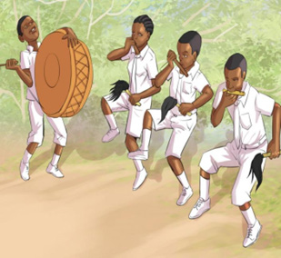
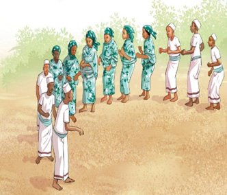
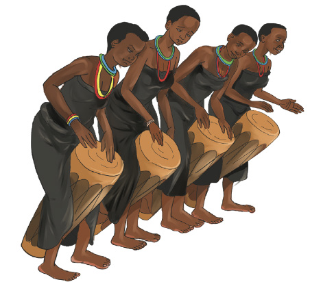

Ngoma za asili
Ngoma ni uchezeshaji wa viungo vya mwili unaoendana na mapigo ya kimuziki. Ngoma za asili ni aina ya michezo ya kitamaduni iliyojikita katika desturi, mila na tamaduni za jamii fulani. Ngoma hizi zinaweza kuhusishwa na historia, maadili na imani ya jamii hizo. Mara nyingi huchezwa wakati wa sherehe za kijamii, kidini au kitamaduni. Ngoma za asili huakisi maisha ya kila siku, maadili, imani na utamaduni wa jamii. Ngoma hizo hutofautiana kutoka jamii moja hadi nyingine.
Chunguza picha, kisha jibu maswali yanayofuata:
1

2


Maswali
Shughuli ya kumi na tatu
Cheza na wenzako ngoma zinazochezwa katika jamii unayoishi.